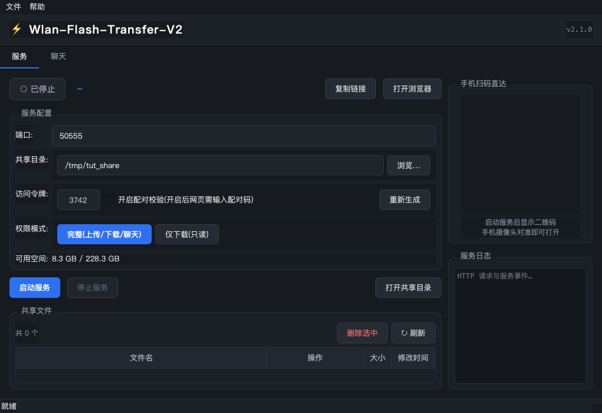
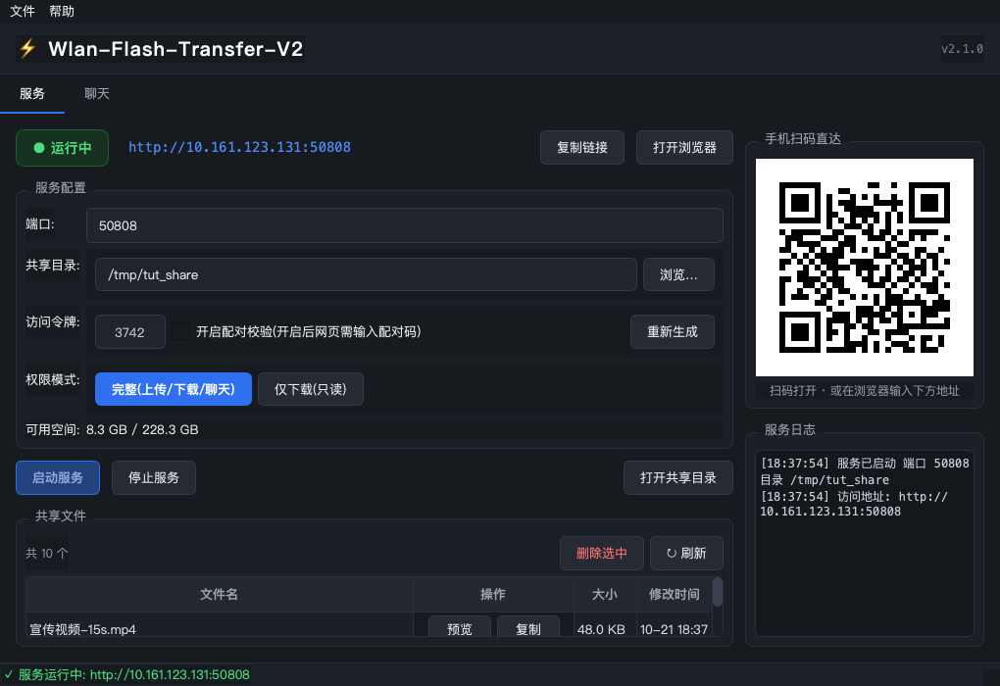
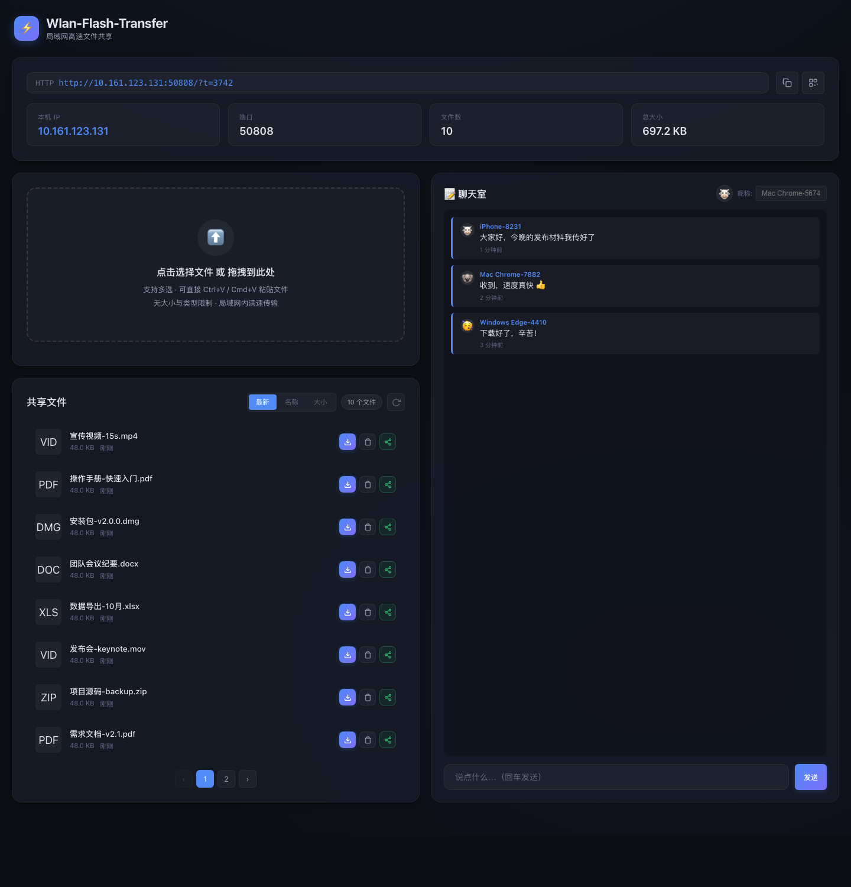
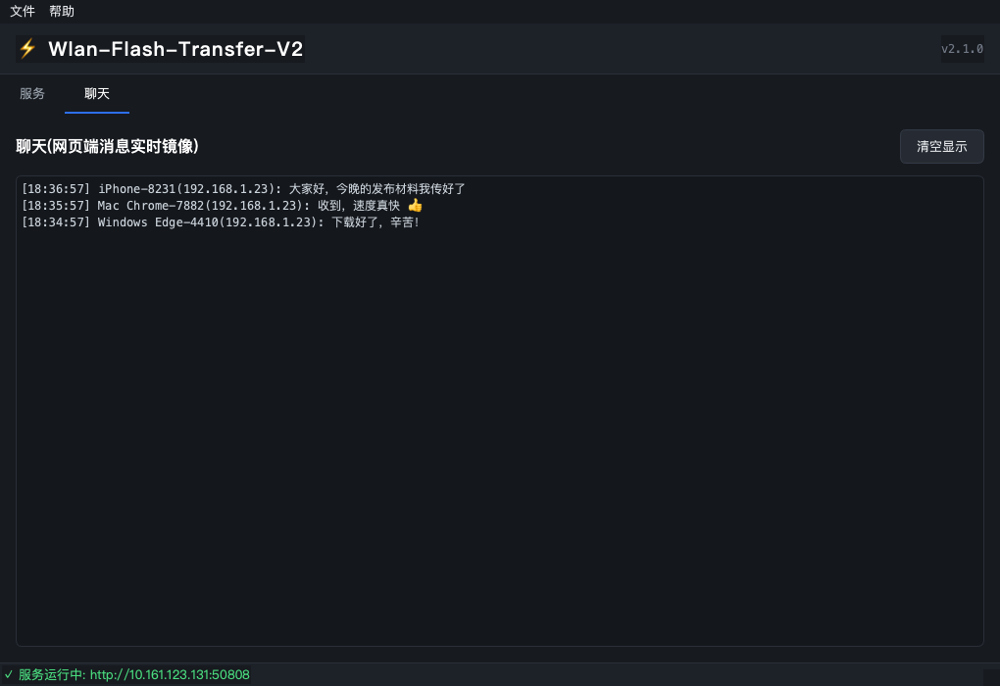
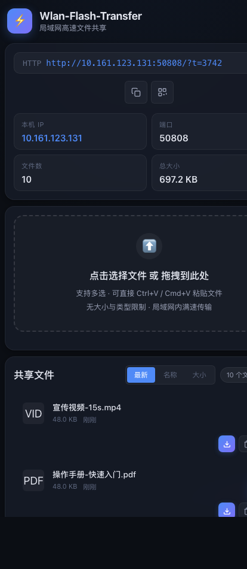
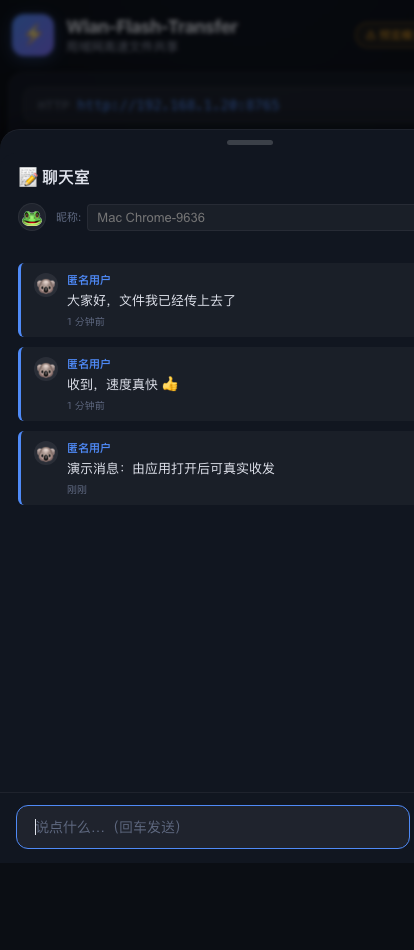
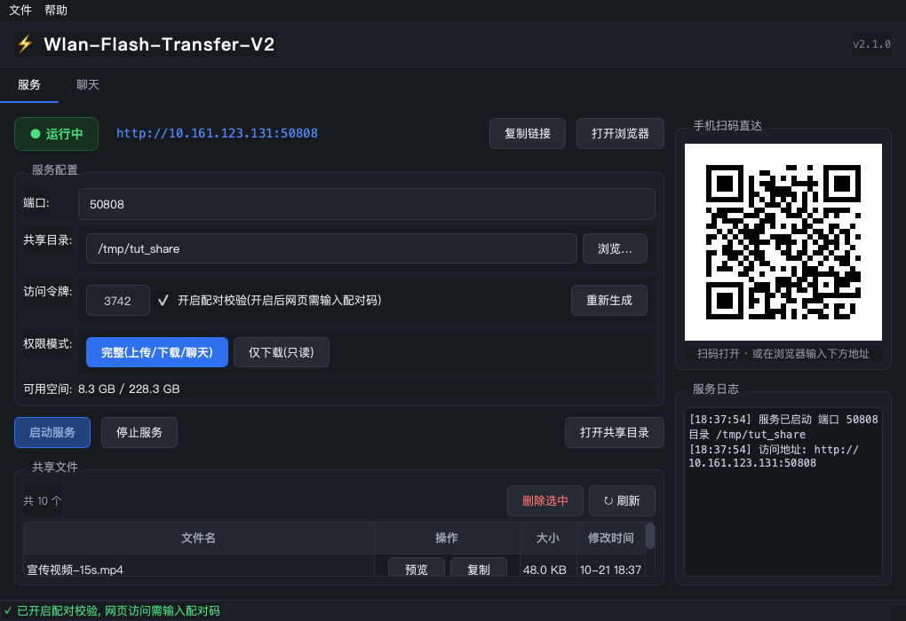
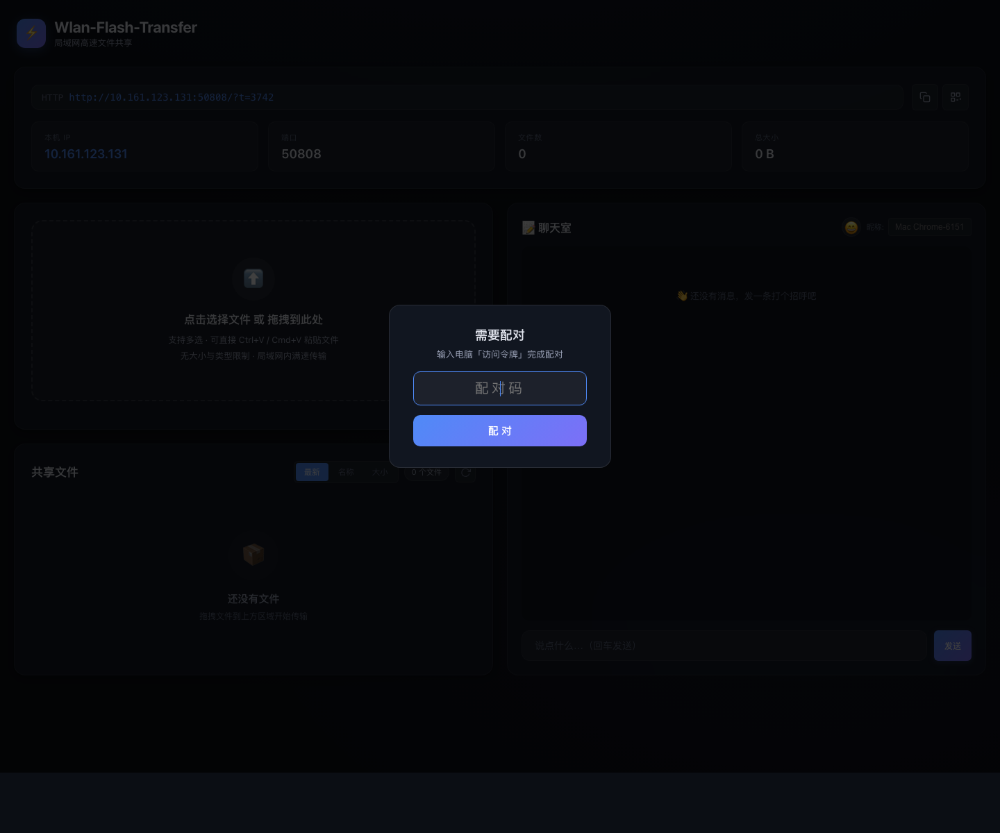
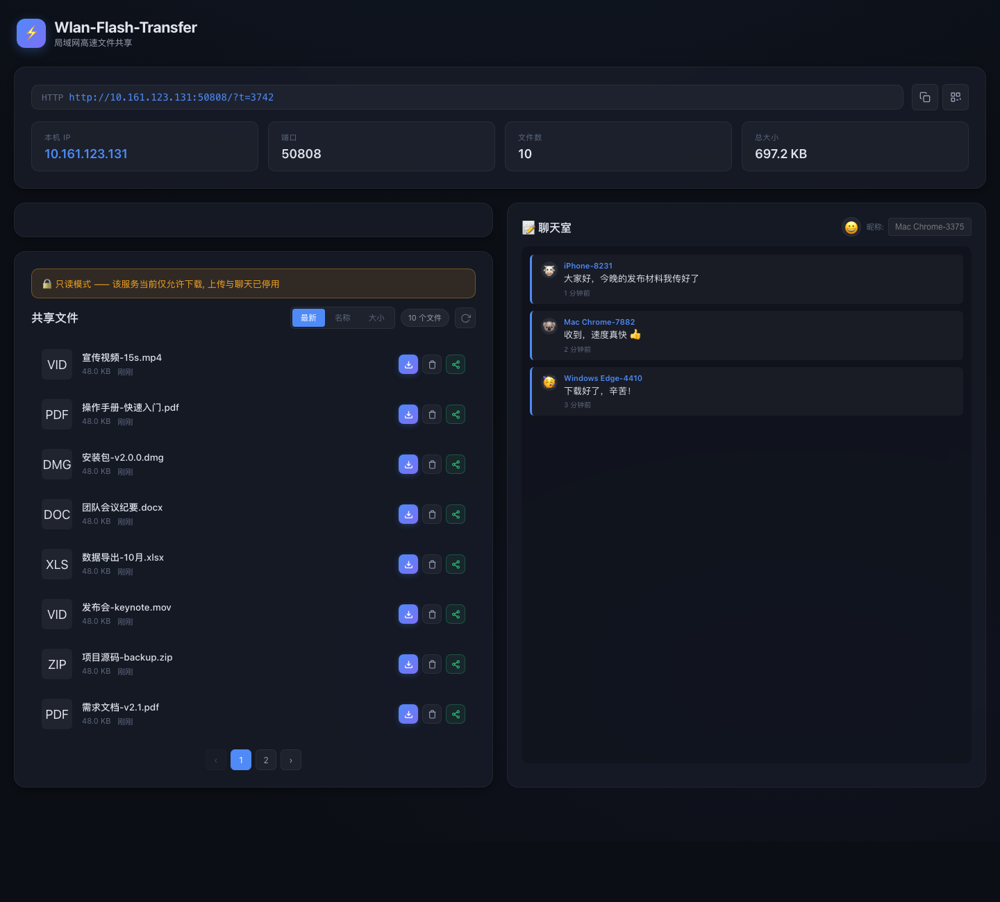

局域网 AirDrop:电脑启动服务,同一 Wi-Fi 下的手机/平板/电脑扫码即达 —— 拖拽/粘贴上传、下载、分享、emoji 头像聊天;还可开启 4 位配对码与只读模式保护。
Wlan-Flash-Transfer-V2 是一个局域网文件互传工具:电脑上启动服务, 同一 Wi-Fi 下的手机/平板/另一台电脑扫码或输入地址打开网页, 就能互相传文件、实时聊天 —— 不用数据线、不用登录、文件不限大小。
| 核心能力 | 说明 |
|---|---|
| 🖥 桌面应用 | 启动/停止服务、选共享目录、看日志、扫码、聊天镜像 |
| 🌐 网页端(布局E) | 桌面等宽分栏、手机悬浮聊天;上传点击/拖拽/粘贴,文件分页管理 |
| 🔐 4 位配对码 | 开启后网页需输入配对码才能使用,防陌生人 |
| 📖 只读模式 | 一键切换「仅下载」,适合纯分享场景,防误删 |
| 💬 实时聊天 | 三端实时互通;昵称自动生成,emoji 头像 |
打开应用 → 点 「启动服务」 → 状态变绿色 ● 运行中,窗口出现二维码(见第 4 节)。
相机对准二维码 → 网页自动打开(若开启配对,输入窗口上的 4 位码,见第 12 节)。
拖拽/点选/粘贴上传 → 进度条跑完即到电脑(见第 7 节)。
电脑点「打开共享目录」;或手机在网页里点蓝色下载按钮。
xattr -dr com.apple.quarantine dist/Wlan-Flash-Transfer-V2.app

http://10.161.123.131:50555、二维码生成、共享文件表载入、日志记录启动事件默认共享 ~/Wlan-Flash-Transfer,点「浏览…」可换;目录里的已有文件直接出现在列表。
徽标变 ● 运行中,地址与二维码出现,「停止服务」同时激活。
端口释放,网页立即无法访问;文件仍在共享目录里。
相机对准应用窗口的二维码——直达页面,免输地址。
浏览器输入应用显示的地址,如 http://10.161.123.131:8765。
在电脑本机直接打开网页端。

?t=配对码)+ IP/端口/文件数/总大小;左侧上传与共享文件(分页);右侧聊天室(不同设备不同 emoji 头像)网页按屏幕宽度自动切换布局,无需任何设置:
支持多选 · 可直接 Ctrl+V / Cmd+V 粘贴文件
无大小与类型限制 · 局域网内满速传输
三种方式任选,都支持一次多个文件:
| 方式 | 操作 | 适合场景 |
|---|---|---|
| 点击选择 | 点上传区 → 文件选择框 → 按住 Ctrl/Cmd 多选 | 文件在深层文件夹 |
| 拖拽 | 把文件拖到上传区,边框变蓝时松手 | 手里正开着文件夹 |
| 粘贴 | 复制文件后在页面按 Ctrl+V / Cmd+V | 截图直接粘贴 |
每个文件行末尾固定三个等大按钮,颜色即含义(见第 6 节大图文件行右侧):
| 按钮 | 功能 | 说明 |
|---|---|---|
| 蓝 = 下载 | 把文件下载到本机 | 点文件名同样可下载;图片直接显示缩略图与「预览」标记 |
| 灰 = 删除 | 从共享目录删除 | 确认弹窗,不可撤销;当前页删空自动退回上一页 |
| 绿 = 分享 | 分享这个文件 | 手机:系统分享面板;电脑:复制下载链接(自带令牌)+ 绿色提示 |

iPhone-8231、Mac Chrome-3387)并永久固定;可自定义并自动记住;留空则用自动昵称

右下角 💬 悬浮球 常驻,不挡文件操作
来新消息时悬浮球显示红色数字角标(最多 99+)
点悬浮球 → 面板滑出 → 打字发送
收起:点遮罩 / 点 ✕ / 按 Esc 任选
担心同网内陌生人访问?在桌面端勾选「开启配对校验」:

此时任何人打开网页,会先看到配对弹层:

纯分享场景怕误删/误传?权限模式点一下 「仅下载(只读)」:

~/Library/Logs/LAN文件传输v2.log(macOS),反馈问题附上它最有用。lan-transfer-v2.spec 剔除未使用的 Qt 组件、插件与全部翻译文件--smoke + --screenshot 双验证